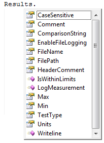
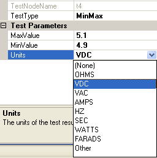

Test result properties of test nodes
This page describes how to set the configurable test node properties that relate to test results. Most can be accessed via either the Properties Page or the Results object from the test script. The Results object is available in each VBScript test function. Any changes made will apply to the test node whose function the changes are made in. The IntelliSense® provided for the Results object will assist you in setting the test node properties. All test node properties will be displayed in both the Test Results window and the test results file (if the results file is enabled).
Example:
From the test script, type "Results" followed by a period (.). As soon as you type the period, a list showing the available test result properties appears.

Click on the following links for a detailed description of each property or method.
| CaseSensitive | Comment | ComparisonString | EnableFileLogging |
| FileName | FilePath | HeaderComment | IsWithinLimits |
| LogMeasurement | Max | Min | TestType |
| Units | WriteLine |
For more info on EnableFileLogging, FileName, FilePath, HeaderComment, LogMeasurement, or WriteLine, see the Test results file topic.
Determines whether or not the string comparison made for a StringCompare test type is case-sensitive. This property can be set when a new StringCompare test is created (see Adding a new test), or it can be set later from the Properties Page or the test script.
Note: The CaseSensitive property applies only to StringCompare test types. It
will only be visible in the Properties Page if the test node is a StringCompare test.
Example VBScript call:
|
|
The Comment property can only be set from the test script. The comment field may consist of any string value, but it should be kept brief. The comment will be displayed in the test results window and in the test results file (if the results file is enabled).
Example VBScript call:
|
|
The string that the return value of the test will be compared to to determine a pass or fail. This property can be set when a new StringCompare test is created (see Adding a new test), or it can be set later from the Properties Page or the test script.
Note: The ComparisonString property applies only to StringCompare test types. It
will only be visible in the Properties Page if the test node is a StringCompare test.
Example VBScript call:
|
|
Gets or sets whether or not to save results to a file.
Gets or sets the test results file name as a string.
Gets or sets the file path that the test results file will be saved to.
Gets or sets an optional comment field in the header of the test results file.
Logs a measurement that will be recorded in the results file, specified by user.
Appends a non-formatted string to the test results .csv file.
bool IsWithinLimits( object result )
Determines whether or not the value specified by result is within the limits for the current test node. Use this method when it is necessary to determine if a test result is within limits before the test node has finished executing. In the example code below, the loop will continue looping until the return value is within limits.
Example VBScript call:
|
Loop Until Results.IsWithinLimits(dActual) = True |
The maximum passing value a test can return. Any result that is greater than the Max value will cause the test to fail. Max can be set when a new Min/Max test is created (see Adding a new test), or it can be set later from the Properties Page or the test script. The Max field may consist of any integer or floating-point value.
Note: The Max property applies only to Min/Max test types. It
will only be visible in the Properties Page if the test node is a Min/Max test.
Example VBScript call:
|
|
The minimum passing value a test can return. Any result that is less than the Min value will cause the test to fail. Min can be set when a new Min/Max test is created (see Adding a new test), or it can be set later from the Properties Page or the test script. The Min field may consist of any integer or floating-point value.
Note: The Min property applies only to Min/Max test types. It
will only be visible in the Properties Page if the test node is a Min/Max test.
Example VBScript call:
|
|
Gets the test type for the active test node. Returns one of the following integers:
0 = Boolean test type
1 = Max test type
2 = Min test type
3 = Min/Max test type
4 = StringCompare test type
See Test Types for more information on the different test types available.
The units of the test's return value. Units can be set from the Properties Page or the test script. A drop-down list of possible selections is available from the Properties Page, but you may also type in your own units. The Units field may consist of any string value.
Note: The Units property applies only to Min/Max test types.
It will only be visible in the Properties Page if the test node is a Min/Max
test.
|  | Select one of the predefined values, or simply type in your own. |
Example VBScript call:
|
|
Astronics Test Systems
Last updated on 11/18/14
by M. Buccat